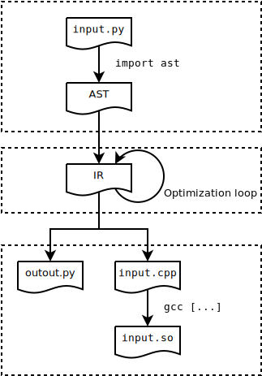
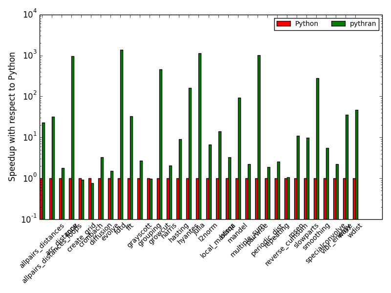
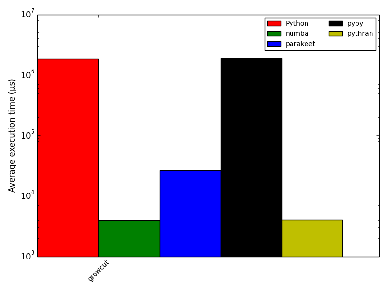

Pythran: Static Compilation of Parallel Scientific Kernels
a.k.a. Python/Numpy compilers for the mass
Proudly made in Namek by serge-sans-paille & pbrunet
/us
Serge « sans paille » Guelton
$ whoami
sguelton- R&D engineer at QuarksLab on compilation for security
- Associate researcher at Télécom Bretagne
Pierrick Brunet
$ whoami
pbrunet- R&D engineer at INRIAlpes/MOAIS on parallelism
Pythran in a snake shell

- A Numpy-centric Python-to-C++ translator
- A Python code optimizer
- A Pythonic C++ library
Core concepts
- Focus on high-level constructs
- Generate
cleanhigh level code - Optimize Python code before generated code
- Vectorization and Paralllelism
- Test, test, test
- Bench, bench, bench
Ask StackOverflow
when you're looking for test caseshttp://stackoverflow.com/[...]numba-or-cython-acceleration-in-reaction-diffusion-algorithm
import numpy as np
def GrayScott(counts, Du, Dv, F, k):
n = 300
U = np.zeros((n+2,n+2), dtype=np.float32)
V = np.zeros((n+2,n+2), dtype=np.float32)
u, v = U[1:-1,1:-1], V[1:-1,1:-1]
r = 20
u[:] = 1.0
U[n/2-r:n/2+r,n/2-r:n/2+r] = 0.50
V[n/2-r:n/2+r,n/2-r:n/2+r] = 0.25
u += 0.15*np.random.random((n,n))
v += 0.15*np.random.random((n,n))
for i in range(counts):
Lu = ( U[0:-2,1:-1] +
U[1:-1,0:-2] - 4*U[1:-1,1:-1] + U[1:-1,2:] +
U[2: ,1:-1] )
Lv = ( V[0:-2,1:-1] +
V[1:-1,0:-2] - 4*V[1:-1,1:-1] + V[1:-1,2:] +
V[2: ,1:-1] )
uvv = u*v*v
u += Du*Lu - uvv + F*(1 - u)
v += Dv*Lv + uvv - (F + k)*v
return VThread Summary
- OP
- My code is slow with Cython and Numba
- Best Answer
- You need to make all loops explicit
Cython Version
cimport cython
import numpy as np
cimport numpy as np
cpdef cythonGrayScott(int counts, double Du, double Dv, double F, double k):
cdef int n = 300
cdef np.ndarray U = np.zeros((n+2,n+2), dtype=np.float_)
cdef np.ndarray V = np.zeros((n+2,n+2), dtype=np.float_)
cdef np.ndarray u = U[1:-1,1:-1]
cdef np.ndarray v = V[1:-1,1:-1]
cdef int r = 20
u[:] = 1.0
U[n/2-r:n/2+r,n/2-r:n/2+r] = 0.50
V[n/2-r:n/2+r,n/2-r:n/2+r] = 0.25
u += 0.15*np.random.random((n,n))
v += 0.15*np.random.random((n,n))
cdef np.ndarray Lu = np.zeros_like(u)
cdef np.ndarray Lv = np.zeros_like(v)
cdef int i, c, r1, c1, r2, c2
cdef double uvv
cdef double[:, ::1] bU = U
cdef double[:, ::1] bV = V
cdef double[:, ::1] bLu = Lu
cdef double[:, ::1] bLv = Lv
for i in range(counts):
for r in range(n):
r1 = r + 1
r2 = r + 2
for c in range(n):
c1 = c + 1
c2 = c + 2
bLu[r,c] = bU[r1,c2] + bU[r1,c] + bU[r2,c1] + bU[r,c1] - 4*bU[r1,c1]
bLv[r,c] = bV[r1,c2] + bV[r1,c] + bV[r2,c1] + bV[r,c1] - 4*bV[r1,c1]
for r in range(n):
r1 = r + 1
for c in range(n):
c1 = c + 1
uvv = bU[r1,c1]*bV[r1,c1]*bV[r1,c1]
bU[r1,c1] += Du*bLu[r,c] - uvv + F*(1 - bU[r1,c1])
bV[r1,c1] += Dv*bLv[r,c] + uvv - (F + k)*bV[r1,c1]
return VPythran version
Add this line to the original kernel:
#pythran export GrayScott(int, float, float, float, float)Timings
$ python -m timeit -s 'from grayscott import GrayScott' 'GrayScott(40, 0.16, 0.08, 0.04, 0.06)'
10 loops, best of 3: 52.9 msec per loop
$ cython grayscott.pyx
$ gcc grayscott.c `python-config --cflags --libs` -shared -fPIC -o grayscott.so -O3 -march=native
$ python -m timeit -s 'from grayscott import GrayScott' 'GrayScott(40, 0.16, 0.08, 0.04, 0.06)'
10 loops, best of 3: 36.4 msec per loop
$ pythran grayscott.py -O3 -march=native
$ python -m timeit -s 'from grayscott import GrayScott' 'GrayScott(40, 0.16, 0.08, 0.04, 0.06)'
10 loops, best of 3: 20.3 msec per loopLessons learnt
- Explicit is not always better than implicit
- Many ``optimization hints'' can be deduced by the compiler
- High level constructs carry valuable informations
I am not saying Cython is bad. Cython does a great job. It is just pragmatic where Pythran is idealist
Compilation Challenges
u = U[1:-1,1:-1]
U[n/2-r:n/2+r,n/2-r:n/2+r] = 0.50
u += 0.15*np.random.random((n,n))
- Array views
- Value broadcasting
- Temporary arrays creation
- Extended slices composition
- Numpy API calls
Optimization Opportunities
Lu = (U[0:-2,1:-1] + U[1:-1,0:-2]
- 4*U[1:-1,1:-1] + U[1:-1,2:] + U[2: ,1:-1])
- Many useless temporaries
Lucould be forward-substituted- SIMD instruction generation opportunities
- Parallel loop opportunities
Pythran Usage
$ pythran --help
usage: pythran [-h] [-o OUTPUT_FILE] [-E] [-e] [-f flag] [-v] [-p pass]
[-m machine] [-I include_dir] [-L ldflags]
[-D macro_definition] [-O level] [-g]
input_file
pythran: a python to C++ compiler
positional arguments:
input_file the pythran module to compile, either a .py or a .cpp
file
optional arguments:
-h, --help show this help message and exit
-o OUTPUT_FILE path to generated file
-E only run the translator, do not compile
-e similar to -E, but does not generate python glue
-f flag any compiler switch relevant to the underlying C++
compiler
-v be verbose
-p pass any pythran optimization to apply before code
generation
-m machine any machine flag relevant to the underlying C++
compiler
-I include_dir any include dir relevant to the underlying C++ compiler
-L ldflags any search dir relevant to the linker
-D macro_definition any macro definition relevant to the underlying C++
compiler
-O level any optimization level relevant to the underlying C++
compiler
-g any debug level relevant to the underlying C++ compiler
It's a megablast!Sample Usage
$ pythran input.py # generates input.so
$ pythran input.py -E # generates input.cpp
$ pythran input.py -march=native -Ofast # Esod Mumixam !Type Annotations
Only for exported functions
#pythran export foo0()
#pythran export foo1(int)
#pythran export foo2(float32[][])
#pythran export foo2(float64[][])
#pythran export foo2(int8[][][])
#pythran export foo3((int, float), int list, str:str dict)Pythran Compilation Flow
Front End
- 100% based on the
astmodule - Supports
- Several standard module (incl. partial Numpy)
- Polymorphic functions
- list, tuple, dict, str, int, long float
- Named parameters, default arguments
- Generators…
- Does not Support
- Non-implicitely typed code
- Global variable
- Most Python modules (no CPython mode!)
- User-defined classes…
Middle End
Iteratively applies high level, Python-aware optimizations:
- Interprocedural Constant Folding
- For-Based-Loop Unrolling
- Forward Substitution
- Instruction Selection
- Deforestation
- Scalar Renaming
- dead Code Elimination
Back Ends
Python Back End
Useful for debugging!
C++11 Back End
- C++11 implementation of
__builtin__ numpy itertools… - Lazy evaluation through Expression Templates
- Relies on OpenMP,
nt2andboost::simdfor the parallelization / vectorization
C++11: Typing
the W.T.F. slide
Pythran translates Python implicitly statically typed polymorphic code into C++ meta-programs that are instanciated for the user-given types, and specialize them for the target architecture
C++11: Parallelism
Implicit
Array operations and several numpy functions are written using OpenMP and Boost.simd
Explicit
OpenMP 3 support, ported to Python
#omp parallel for reduction(+:r)
for i, v in enumerate(l):
r += i * vBenchmarks
https://github.com/serge-sans-paille/numpy-benchmarks
A collection of high-level benchmarks
- Code gathered from StackOverflow + other compiler code base
- Mostly high-level code
- Generate results for CPython, PyPy, Numba, Parakeet, Hope and Pythran
Benchmarks
no parallelism, no vectorisation (, no fat)
(Num)Focus: growcut
From the Numba codebase!
#pythran export growcut(float[][][], float[][][], float[][][], int)
import math
import numpy as np
def window_floor(idx, radius):
if radius > idx:
return 0
else:
return idx - radius
def window_ceil(idx, ceil, radius):
if idx + radius > ceil:
return ceil
else:
return idx + radius
def growcut(image, state, state_next, window_radius):
changes = 0
sqrt_3 = math.sqrt(3.0)
height = image.shape[0]
width = image.shape[1]
for j in xrange(width):
for i in xrange(height):
winning_colony = state[i, j, 0]
defense_strength = state[i, j, 1]
for jj in xrange(window_floor(j, window_radius),
window_ceil(j+1, width, window_radius)):
for ii in xrange(window_floor(i, window_radius),
window_ceil(i+1, height, window_radius)):
if (ii != i and jj != j):
d = image[i, j, 0] - image[ii, jj, 0]
s = d * d
for k in range(1, 3):
d = image[i, j, k] - image[ii, jj, k]
s += d * d
gval = 1.0 - math.sqrt(s)/sqrt_3
attack_strength = gval * state[ii, jj, 1]
if attack_strength > defense_strength:
defense_strength = attack_strength
winning_colony = state[ii, jj, 0]
changes += 1
state_next[i, j, 0] = winning_colony
state_next[i, j, 1] = defense_strength
return changes(Num)Focus: growcut
Academic Results
- Pythran: Enabling Static Optimization of Scientific Python Programs, S. Guelton, P. Brunet et al. in CSD, 2015
- Exploring the Vectorization of Python Constructs Using Pythran and Boost SIMD, S. Guelton, J. Falcou and P. Brunet, in WPMVP, 2014
- Compiling Python modules to native parallel modules using Pythran and OpenMP Annotations, S. Guelton, P. Brunet and M. Amini, in PyHPC, 2013
- Pythran: Enabling Static Optimization of Scientific Python Programs, S. Guelton, P. Brunet et al. in SciPy, 2013
Powered by Strong Engineering
Preprequisite for reproductible science
- 2773 test cases, incl. unit testing, doctest, Continuous integration (thx Travis!)
- Peer-reviewed code
- Python2.7 and C++11
- Linux, OSX (almost okay), Windows (on going)
- User and Developer doc: http://pythonhosted.org/pythran/
- Hosted on https://github.com/serge-sans-paille/pythran
- Releases on PyPi:
$ pip install pythran - Custom Debian repo:
$ apt-get install pythran
We need more peons
- Pythonic needs a serious cleanup
- Typing module needs better error reporting
- OSX Support is partial and Windows support is on-going
numpy.randomandnumpy.linalg
THE END